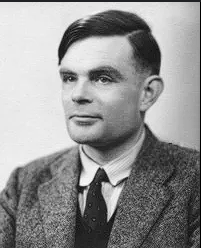
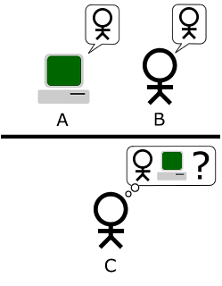

O matemático, e posteriormente pai da computação, Alan Turing contribuiu com muitos avanços tecnológicos na época da Segunda Guerra Mundial, como o desenvolvimento do sistema “The Bombe”, que decodificava mensagens nazistas criptografadas, a qual permitiu vantagem sobre os alemães.
Com a alta repercussão da mais nova tecnologia criada, a sociedade apresentou diversos questionamentos e desconfianças acerca da capacidade “racional” da máquina, se esta poderia pensar de modo independente como os humanos, ou até mesmo superá-los em algum momento. A polêmica levou Turing a sistematizar um teste aplicado em inteligências artificiais que indicaria se seria ou não possível distinguir uma máquina de uma pessoa.
O Teste de Turing fundamenta-se no Jogo da Imitação, também idealizado pelo matemático, o qual consiste na participação de três jogadores: um computador, uma pessoa e um interrogador. O primeiro deve responder às perguntas feitas pelo interrogador, “tentando” passar-se por um ser humano, já o segundo deve responder normalmente ao questionário. No final do teste, o interrogador deve descobrir quem é quem. Caso a máquina conseguisse passar no teste, ou seja, enganar o mediador, esta seria considerada inteligente.
O primeiro caso em que um computador passou no Teste de Turing ocorreu no ano de 2014, o sistema Eugene Goostman “[...] conseguiu convencer 33% dos juízes de que ele era humano, muito embora para os outros jurados tenha ficado claro que se tratava de um computador.” (O GLOBO, 2014)
Atualmente, já existem muitas AI que respondem usuários de forma natural, e a tendência é que elas fiquem cada vez mais parecidas com seres humanos. Mas esse aprimoramento das tecnologias causa uma ineficácia do Teste de Turing original, mostrando-se ultrapassado simples de mais no processo de diferenciação dos sistemas artificiais. Retomando a busca por meios que tragam formas de discernir, efetivamente, computadores de humanos
filmes linha do tempo